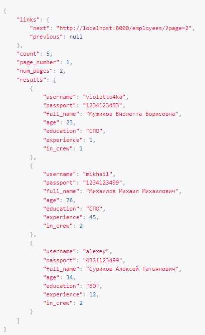

Глава 2
Фильтрация
Автоматический фильтр с сортировкой в диапазоне возраста
views.py
class EmployeeAgeFilter(django_filters.FilterSet):
min_age = django_filters.NumberFilter(field_name = 'age', lookup_expr = 'gte')
max_age = django_filters.NumberFilter(field_name = 'age', lookup_expr = 'lte')
class Meta:
model = Employee
fields = ['min_age', 'max_age']

Фильтрация сотрудников по образованию и номеру экипажа
views.py
class EmployeeListView(generics.ListAPIView):
queryset = Employee.objects.all()
serializer_class = EmployeeSerializer
pagination_class = CustomPagination
filterset_class = EmployeeAgeFilter
def get_queryset(self):
queryset = Employee.objects.all()
education = self.request.query_params.get('education', None)
in_crew = self.request.query_params.get('in_crew', None)
if (education is not None) and (in_crew is not None):
queryset = queryset.filter(education=education, in_crew=in_crew)
return queryset

Фильтрация по состоянию самолета и названию авиакомпании, поиск по типу самолета
views.py
class AirplaneListView(generics.ListAPIView):
queryset = Airplane.objects.all()
serializer_class = AirplaneSerializer
def get_queryset(self):
queryset = Airplane.objects.all()
under_maintenance = self.request.query_params.get('under_maintenance', None)
airline = self.request.query_params.get('airline', None)
if (under_maintenance is not None) and (airline is not None):
queryset = queryset.filter(under_maintenance=under_maintenance, airline=airline)
elif under_maintenance is not None:
queryset = queryset.filter(under_maintenance=under_maintenance)
elif airline is not None:
queryset = queryset.filter(airline=airline)
return queryset
filter_backends = [filters.SearchFilter]
search_fields = ['type']


Поиск рейса по транзиту (из связной таблицы)
views.py
class ScheduleListView(generics.ListAPIView):
queryset = FlightAsScheduled.objects.all()
serializer_class = ScheduleSerializer
filter_backends = [filters.SearchFilter]
search_fields = ['transit__destination']

Сортировка рейсов по дате отправления, фильтрация рейсов по экипажу на борту
views.py
class FlightListView(generics.ListAPIView):
queryset = Flight.objects.all()
serializer_class = FlightSerializer
def get_queryset(self):
queryset = Flight.objects.all()
crew = self.request.query_params.get('crew', None)
if crew is not None:
queryset = queryset.filter(crew=crew)
return queryset
filter_backends = [filters.OrderingFilter]
departure_date = django_filters.DateFilter(field_name='departure_date', lookup_expr='exact')


Пагинация
Автоматическая пагинация
settings.py
REST_FRAMEWORK = {
'DEFAULT_AUTHENTICATION_CLASSES': (
'rest_framework.authentication.TokenAuthentication',
),
'DEFAULT_FILTER_BACKENDS': ['django_filters.rest_framework.DjangoFilterBackend'],
'DEFAULT_PAGINATION_CLASS':
'rest_framework.pagination.PageNumberPagination',
'PAGE_SIZE': 4
}
Кастомная пагинация
views.py
class CustomPagination(pagination.PageNumberPagination):
def get_paginated_response(self, data):
return Response({
'links': {
'next': self.get_next_link(),
'previous': self.get_previous_link()
},
'count': self.page.paginator.count,
'page_number': self.page.number,
'num_pages': self.page.paginator.num_pages,
'results': data,
})

Загрузка и валидация файлов
Модель для загрузки фотографии сотрудника
models.py
class Photo(models.Model):
employee = models.ForeignKey('Employee', on_delete=models.CASCADE, null=True)
name = models.CharField(max_length=100, verbose_name='Название', null=True)
size = models.IntegerField(verbose_name='Размер', null=True)
file = models.FileField(validators=[validate_file], upload_to='media/')
def __str__(self):
return self.name
def save(self, *args, **kwargs):
self.name = self.file.name
self.size = self.file.size
super(Photo, self).save(*args, **kwargs)
Загрузка нескольких файлов
views.py
class MultiplePhotoCreateView(generics.CreateAPIView):
queryset = Photo.objects.all()
serializer_class = EmployeePhotoSerializer
def post(self, request, *args, **kwargs):
files = request.FILES.getlist('file')
for file in files:
file = Photo(name=file.name, size=file.size, file=file)
file.save()
return Response()
Валидация файла
validators.py
def validate_file(file):
MAX_MB = 10
limit = MAX_MB * 1024 * 1024
if file.size > limit:
raise ValidationError(f'Размер файла превышает {MAX_MB} MB.')
file_extensions = ['image/jpeg', 'image/jpg', 'image/png']
content_type = magic.from_buffer(file.read(), mime=True)
if content_type not in file_extensions:
raise ValidationError(f'Файлы с расширением {content_type} не поддерживаются.')


Сигналы
Вызывает логику во время создания экземпляра объекта
signals.py
@receiver(post_save, sender=Employee)
def create(sender, instance, created, **kwargs):
if created:
print(f'Красотка {instance.full_name} была добавлена в список сотрудников\n')

Сохраняет значения выбранных полей в таблице в специальные поля для хранения предыдущих значений при обновлении объекта
signals.py
@receiver(pre_save, sender=Employee)
def update(sender, instance, **kwargs):
try:
prev_instance = Employee.objects.get(id=instance.id)
instance.old_age = prev_instance.age
print(f'Красотка {instance.full_name} стала на год ближе к пенсии \n'
f'Красотке было {instance.old_age}\n'
f'Красотке стало {instance.age}\n')
except ObjectDoesNotExist:
pass

При удалении объекта записывает информацию об удалении в лог
signals.py
@receiver(pre_delete, sender=Employee)
def delete(sender, instance, **kwargs):
with open('логи.txt', 'a') as f:
f.write(f'Красотка {instance.full_name} больше не с нами\n')